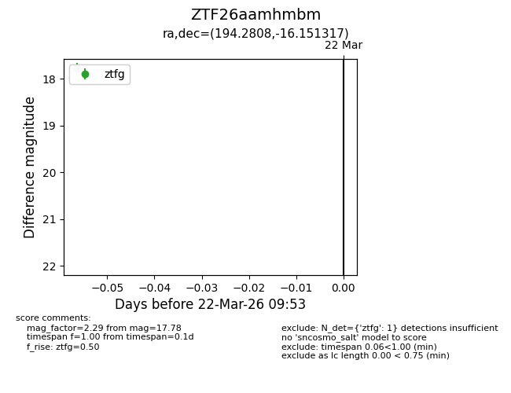
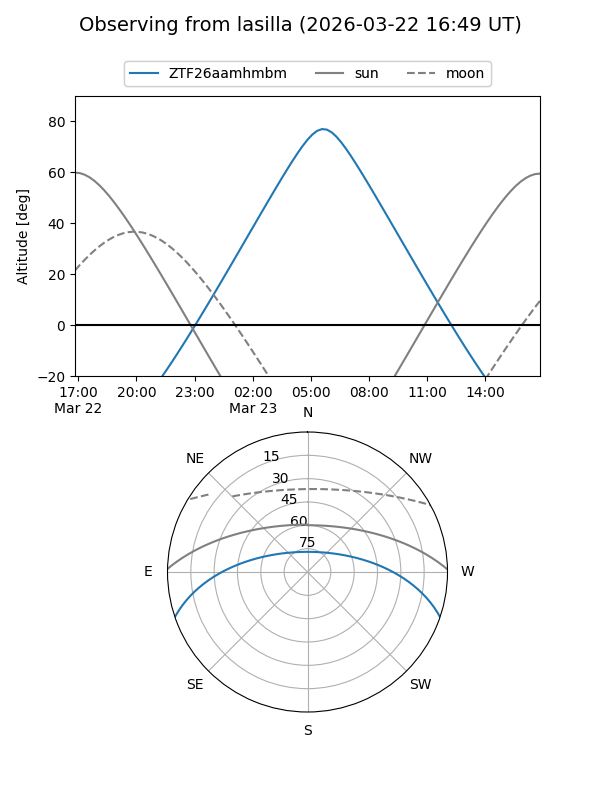
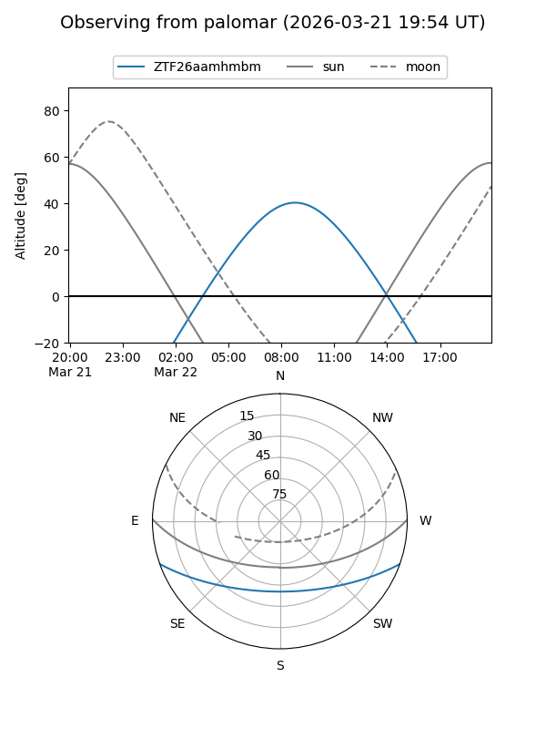

ZTF26aamhmbm
Target ZTF26aamhmbm at 2026-03-22 09:55
Aliases and brokers:
FINK: link
Lasair: link
ALeRCE: link
alt names
ZTF26aamhmbm (ztf,fink_ztf)
Coordinates:
equatorial (ra, dec) = 194.2808,-16.15132
equatorial (HMS+DMS) = 12:57:07.40,-16:09:04.74
galactic (l, b) = (304.9227,+46.69845)
Flags:
Photometry:
last ztfg=17.78
1 ztfg detections
Lightcurve

Visibility


Additional plots